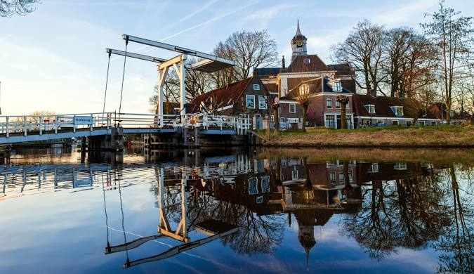
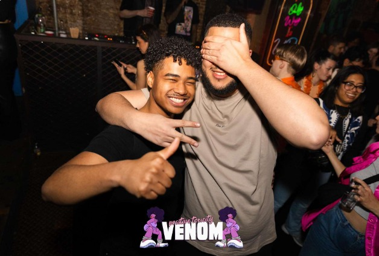

Wie ben ik en waar kom ik vandaan
Hoe ben ik geworden wie ik ben

Ik "Ik ben geboren en getogen in Ouderkerk aan de Amstel en woon daar nog steeds. Door de scheiding van mijn ouders heb ik ook lange tijd in Amsterdam gewoond. Dit zorgde ervoor dat ik vaak heen en weer moest reizen met mijn broer om naar mijn vader te gaan en om naar school te gaan in Ouderkerk.
Dankzij mijn broer en vrienden, die heel belangrijk voor me zijn, vind ik broederschap en respect de belangrijkste waarden."

ZZonder mijn beste vrienden was ik waarschijnlijk in de keuken gaan werken. Zij maakten mijn MBO-opleiding leuk en hielpen me om het af te maken, zodat ik naar het HBO kon gaan. Daarom vind ik respect en broederschap belangrijk. Met deze waarden help je elkaar en geniet je meer van je opleiding en sport.